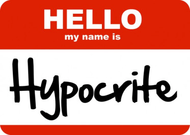
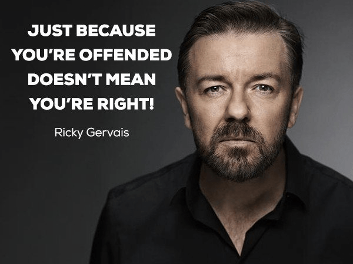
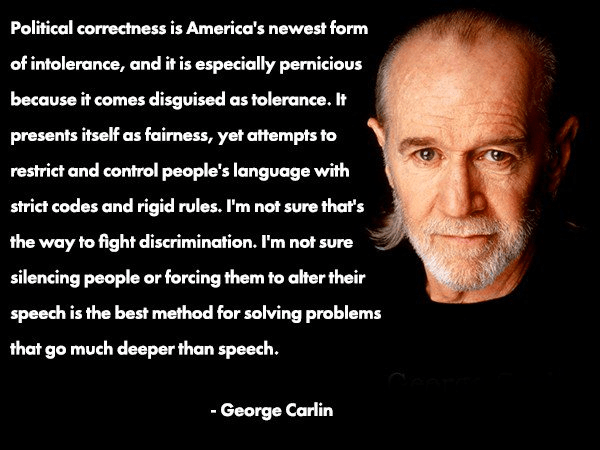

is an aspiring philosopher king, living the dream, travelling the world, hoarding FRNs and ignoring Americunts. He is a European at heart, lover of Latinas, and currently residing in the USA.


The SPLC has officially lost its way. In February, the group designated ROK a hate group. A Voice for Men and Return Of Kings were listed for the first time as “male supremacy groups” on the hate list.
The sole reason given was ROK and AVFM’s “vilification of women.” As a straight white male who loves women, and is opposed to hate groups and poverty, I was triggered and offended by this. I have personally written articles in support of diversity, family, and women’s happiness. Hell, I’ve even written a women’s guide to not getting raped. Yes, many of our articles are critical, and many of the targets of this criticism are women, but to call this vilification is a complete misunderstanding of our raison d’être.
First, it is silly and simplistic to paint ROK with a broad brush. Unlike the SPLC, which is an established institution with employees, offices, and a unified business plan, ROK is a website where men of various backgrounds and interests can come together and discuss issues.

ROK’s readership ranges from teenagers to octogenarians in dozens of countries around the world. An organization like the SPLC should know that grouping people together based on such tenuous connections as their common identity as men is the first step of bigotry.
If I ventured a guess, the recent inclusion was done at the suggestion of a Generation Snowflake Millennial. As recently as 2012, the SPLC specifically disavowed men’s interest groups from being labeled as hate groups, going so far as to say many of our issues are not without merit. So what changed?
SPLC? Do you know why you’re angry?
What caused the SPLC to change their opinion from “You make valid points, but your language is harsh” to “I can’t even! You racist misogynist male supremacists are literally Hitler?” It’s not the message. If anything, ROK has moved away from primarily discussing women and game, and included more articles on self improvement, diet, history, philosophy, religion, physical training, and politics.
In The Current Year, sensitive Millennials who have zero tolerance for anything not puritanically cleaned and whitewashed through politically correct censors will shriek out in agony at any message they do not fully agree with.
Sure, some of the articles here are harsh. But sometimes we need a harsh message. And a lot of the articles are tongue in cheek. At first I thought the ridiculous “ROK is a rape club” label of 2017 was obvious media distortion. But today I’m not so sure. I think many in Generation Snowflake are unable to discern humor and nuance.

When I was an adolescent, the liberals were the people who could take a joke, while conservatives were the stuffy, boring, politically correct class. But today, successful comedians including Jerry Seinfeld, Chris Rock, John Cleese and Bill Maher refuse to perform on college campuses because the audience cannot handle risqué humor.

Then there are the cases like Louis C K, who had his livelihood and passion taken from him without even being accused of a crime.
Oxford defines vilification as abusively disparaging speech; derogatory, expressing an opinion that something is of little worth.
Do you know what is hateful? Calling advocating for your group “supremacy”. ROK is not a “male supremacy” site. Recognizing the differences between men and women is not the same as calling one group supreme. In fact, women are “superior” to men in the feminine realm, and men are “superior” to women in the masculine world, but that is an awfully distorted, negative and hateful way to view things. We as men simply want men, women, and families to be happy, healthy, and self actualized. If you vilify these traits, you are the one who belongs on a hate list.
Men who come to a site teaching them self improvement, dating tips, and behaviors to meet and achieve success with higher quality women seem to value women quite a bit. If men don’t value women, they are more likely to follow the Men Going Their Own Way “MGTOW” path which is not part of ROK. But even then, what’s wrong with that opinion? If men are not finding women of value in their life, is it the man’s fault?
This is a JOKE, not to be taken literally
If women are not providing sufficient value, men do what men always do: work to improve the situation. So we pen articles reminding women that careers, anti-psychotic drugs, obesity, and sexual exploits do not make them happy. We encourage men to seek out more feminine and traditional women, since returning Western women to those values is a lengthy path. And along the way we have fun and laugh, because we are happy, confident, stable men.
The SPLC was founded in 1971, in a time where there was great poverty and judicial disparity in the American south. While extreme poverty is less common today, there is a larger than ever gap between rich and poor, and the American legal system is still quite dysfunctional. From its commendable beginnings fighting the death penalty, unfair imprisonment for blacks and other minorities, and promoting separation between church and state, the organization has devolved into a 1984-style censorship organization that attempts to ban or shut down any speech that it finds even partly offensive.
The SPLC exists today primarily out of momentum. Bleeding heart donors from outside the American south donate money out of the false impression that there are white hooded klan members popping up everywhere and this organization is bravely fighting these groups of federal agents redneck racists. As the SPLC strays further from its path, criticism of the group has increased, from Foreign Policy, the Washington Times, and the NYTimes. Even the FBI recently stopped working with the group to track hate organizations.
Perhaps they should not be criticized too harshly for exaggerating their enemy. After all, what organization is not self-interested to a large degree? But the problem here is the SPLC is alienating all but its most extreme supporters.
Satire–but is this really what you want?
I have visited the civil rights memorial at the SPLC center in Alabama. I was educated by former director Julian Bond. And I have supported the group in the past. But I am also a man. And calling me a hateful man because I strive to improve myself while encouraging and seeking women who are more feminine, traditional, and kind does not cause me to question my beliefs about myself, my culture, or women. It merely causes me to view you as irrelevant and out of touch.
You, SPLC, are the ones who are being hateful. You hate me, as a white man, wanting the same thing my ancestors have had throughout history: a loving, kind, happy, satisfied, feminine woman at my side. You hate not only men, but also women, as you want to twist them into something they are not, encouraging them to be masculine, fat, loud, hostile, lonely, and everything that femininity is not.
And any man who finds value in an article here, or who recognizes, as the SPLC did in 2012, that we raise valid points, will also question why such an organization is targeting ROK as hateful.
It is because of groups like you, that when men like me attempted to meet up with other men last year to discuss our common cause, as numerous other minority groups do every day, we were met with violent mobs, and had to cancel our plans due to safety concerns.
And that’s why in 2018, one may unironically say that the SPLC is the real hate group.
Read More: SPLC Targets ROK for Leftist Violence By Smearing It As A Male Supremacist Hate Group